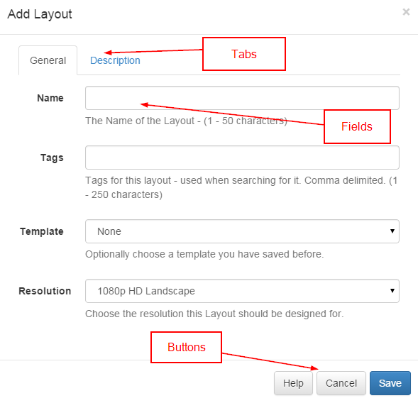

Forms
The CMS presents most transactions (actions that add/edit or delete in some way) using Forms.
The forms have been designed to be consistent across the application and provide as much information as possible.
A typical form looks like the Add Layout form below.

Tabs
Forms can have 1 or multiple tabs. Access by clicking on the tab header, some may cause the form to expand to better fit the content inside them.
Form Fields
Each field has a title that explains what the field represents. Each field will also have a grey explanation entry above or below it.
Buttons
Every form has a button bar at the bottom for the User to commit or cancel the additions/edits they have made.
Most forms also include a "Help" link to sections of the Manual for additional guidance.